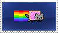
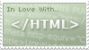
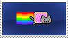
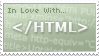
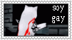
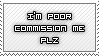
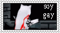
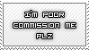
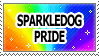
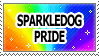

Hi! This is my new About Me page. It used to be hosted on my tumblr. but I updated it and rewrote it here!
I'm Lena. I am on my late 20s, I pretend to be an artist, I like speedrunning, dabble in programming and sometimes I like to write pretentious shit both on this website and my Tumblr. I grew disillusioned with how irony-poisoned most of the modern internet is, so I came back to Tumblr to more earnestly blog about my wide range of interests, which I try to be diligent about tagging. Regardless, I started becoming dissatisfied with Tumblr's management of the website, and decided to come to Neocities as a simple stepping stone into properly hosting my own website, something I have wanted to do for many years. (yes I am aware this almost reads like a Homestuck character intro)
I don't participate much in the fandom, but I guess I'm a furry. My fursona's name is Lena and she's a Marsh Deer; the largest deer species in Latin America (They've got SOCKS!). Most of my art for a while was self-indulgent doodles of her as I guess some sort of self-expression/exploration? DON'T do art hurting her or putting her in NSFW contexts. I am working on a little "shrine" subpage with a reference sheet and lots of information about her, so stay tuned!.
I’m autistic, and though I like it and lots my favorite parts of myself are direct or indirect consequences of my autism, the effect it and my DPDR have on my executive function and ability to work in the current system makes me (and the state, not that they do much anyways) consider it a disability. De-stigmatize autism, de-stigmatize disabilities, and get your neurodivergent kids diagnosed so they don’t grow up thinking they’re fundamentally broken like I did.
I’m Latin American (I will not specify the country for some paper-thin anonimity). While I think some people in the US would consider me a POC, I’m white-passing in my country. I’m not a racial minority on my day-to-day life and it doesn’t have much of an effect in my identity per se, but the sociocultural effects of living in the smoldering neoliberal aftermath of a CIA-backed military dictatorship are obviously a big part of my politics.
I'm a non-binary transfem woman. Attraction-wise, I feel weird about using the label "lesbian", but I am most definitely sapphic. I'm asexual: I barely experience sexual attraction, if I even do at all, but I am non sex-repulsed (I like it! I just never actively want it!). Some conversations with my significant other recently made me realize I'm pretty deep in the aromantic spectrum and I hadn't even noticed! This paragraph used to be longer but I fucked up when rewriting it for here instead of tumblr and the original is lost now so RIP ig
Politically, I’m an Anarcho-Syndicalist that feels incredibly guilty about being too disabled to do any meaningful praxis, but I believe in working with “The Left” up until the fall of capitalism bc ideological puritanism and a fractured left help no one but fascists. I also consider myself a “take no shit” pacifist, and I dip into Anarcho-Nihilism regarding certain environmental topics because honestly at this point it's hard not to.
I have a BSc in Linguistics and formal training as a translator. I’m fluent in Spanish, English, Japanese and Toki Pona, plus I’m proficient-ish in Portuguese and I’m currently learning Lojban. My main sub-fields of interest are Semantics, Sociolinguistics and Phonetics in that order; as expected in this job market, I don’t do jack shit with my degree and work doing bespoke spreadsheets for people that don't know how to use them anyways.
I have been drawing since 2008, with some pauses inbetween. I’m not that amazing at it, but I am happy with my style and I post most of what I do on my Tumblr's art tag. I don’t want to create a separate artblog, because it would make me put too much pressure on myself. I have wanted to make a webcomic for years, and I’m currently in the planning stages of the attempt that will hopefully get me to realize that dream!

 



 





 
